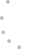
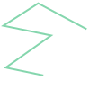

Annotators#
import geoviews as gv
import cartopy.crs as ccrs
from geoviews import annotate
gv.extension('bokeh')
![](data:image/png;base64,iVBORw0KGgoAAAANSUhEUgAAAEAAAABACAYAAACqaXHeAAAABHNCSVQICAgIfAhkiAAAAAlwSFlz
AAAB+wAAAfsBxc2miwAAABl0RVh0U29mdHdhcmUAd3d3Lmlua3NjYXBlLm9yZ5vuPBoAAA6zSURB
VHic7ZtpeFRVmsf/5966taWqUlUJ2UioBBJiIBAwCZtog9IOgjqACsogKtqirT2ttt069nQ/zDzt
tI4+CrJIREFaFgWhBXpUNhHZQoKBkIUASchWla1S+3ar7r1nPkDaCAnZKoQP/D7mnPOe9/xy76n3
nFSAW9ziFoPFNED2LLK5wcyBDObkb8ZkxuaoSYlI6ZcOKq1eWFdedqNzGHQBk9RMEwFAASkk0Xw3
ETacDNi2vtvc7L0ROdw0AjoSotQVkKSvHQz/wRO1lScGModBFbDMaNRN1A4tUBCS3lk7BWhQkgpD
lG4852/+7DWr1R3uHAZVQDsbh6ZPN7CyxUrCzJMRouusj0ipRwD2uKm0Zn5d2dFwzX1TCGhnmdGo
G62Nna+isiUqhkzuKrkQaJlPEv5mFl2fvGg2t/VnzkEV8F5ioioOEWkLG86fvbpthynjdhXYZziQ
x1hC9J2NFyi8vCTt91Fh04KGip0AaG9zuCk2wQCVyoNU3Hjezee9bq92duzzTmxsRJoy+jEZZZYo
GTKJ6SJngdJqAfRzpze0+jHreUtPc7gpBLQnIYK6BYp/uGhw9YK688eu7v95ysgshcg9qSLMo3JC
4jqLKQFBgdKDPoQ+Pltb8dUyQLpeDjeVgI6EgLIQFT5tEl3rn2losHVsexbZ3EyT9wE1uGdkIPcy
BGxn8QUq1QrA5nqW5i2tLqvrrM9NK6AdkVIvL9E9bZL/oyfMVd/jqvc8LylzRBKDJSzIExwhQzuL
QYGQj4rHfFTc8mUdu3E7yoLtbTe9gI4EqVgVkug2i5+uXGo919ixbRog+3fTbQ8qJe4ZOYNfMoTI
OoshUNosgO60AisX15aeI2PSIp5KiFLI9ubb1vV3Qb2ltwLakUCDAkWX7/nHKRmmGIl9VgYsUhJm
2NXjKYADtM1ygne9QQDIXlk49FBstMKx66D1v4+XuQr7vqTe0VcBHQlRWiOCbmmSYe2SqtL6q5rJ
zsTb7lKx3FKOYC4DoqyS/B5bvLPxvD9Qtf6saxYLQGJErmDOdOMr/zo96km1nElr8bmPOBwI9COv
HnFPRIwmkSOv9kcAS4heRsidOkpeWBgZM+UBrTFAXNYL5Vf2ii9c1trNzpYdaoVil3WIc+wdk+gQ
noie3ecCcxt9ITcLAPWt/laGEO/9U6PmzZkenTtsSMQ8uYywJVW+grCstAvCIaAdArAsIWkRDDs/
KzLm2YcjY1Lv0UdW73HabE9n6V66cxSzfEmuJssTpKGVp+0vHq73FwL46eOjpMpbRAnNmJFrGJNu
Ukf9Yrz+3rghiumCKNXXWPhLYcjxGsIpoCMsIRoFITkW8AuyM8jC1+/QLx4bozCEJIq38+1rtpR6
V/yzb8eBlRb3fo5l783N0CWolAzJHaVNzkrTzlEp2bQ2q3TC5gn6wpnoQAmwSiGh2GitnTmVMc5O
UyfKWUKCIsU7+fZDKwqdT6DDpvkzAX4/+AMFjk0tDp5GRXLpQ2MUmhgDp5gxQT8+Y7hyPsMi8uxF
71H0oebujHALECjFKaW9Lm68n18wXp2kVzIcABytD5iXFzg+WVXkegpAsOOYziqo0OkK76GyquC3
ltZAzMhhqlSNmmWTE5T6e3IN05ITFLM4GdN0vtZ3ob8Jh1NAKXFbm5PtLU/eqTSlGjkNAJjdgn/N
aedXa0tdi7+t9G0FIF49rtMSEgAs1kDLkTPO7ebm4IUWeyh1bKomXqlgMG6kJmHcSM0clYLJ8XtR
1GTnbV3F6I5wCGikAb402npp1h1s7LQUZZSMIfALFOuL3UUrfnS8+rez7v9qcold5tilgHbO1fjK
9ubb17u9oshxzMiUBKXWqJNxd+fqb0tLVs4lILFnK71H0Ind7uiPgACVcFJlrb0tV6DzxqqTIhUM
CwDf1/rrVhTa33/3pGPxJYdQ2l2cbgVcQSosdx8uqnDtbGjh9SlDVSMNWhlnilfqZk42Th2ZpLpf
xrHec5e815zrr0dfBZSwzkZfqsv+1FS1KUknUwPARVvItfKUY+cn57yP7qv07UE3p8B2uhUwLk09
e0SCOrK+hbdYHYLjRIl71wWzv9jpEoeOHhGRrJAzyEyNiJuUqX0g2sBN5kGK6y2Blp5M3lsB9Qh4
y2Ja6x6+i0ucmKgwMATwhSjdUu49tKrQ/pvN5d53ml2CGwCmJipmKjgmyuaXzNeL2a0AkQ01Th5j
2DktO3Jyk8f9vcOBQHV94OK+fPumJmvQHxJoWkaKWq9Vs+yUsbq0zGT1I4RgeH2b5wef7+c7bl8F
eKgoHVVZa8ZPEORzR6sT1BzDUAD/d9F78e2Tzv99v8D+fLVTqAKAsbGamKey1Mt9Ann4eH3gTXTz
idWtAJ8PQWOk7NzSeQn/OTHDuEikVF1R4z8BQCy+6D1aWRfY0tTGG2OM8rRoPaeIj5ZHzJxszElN
VM8K8JS5WOfv8mzRnQAKoEhmt8gyPM4lU9SmBK1MCQBnW4KONT86v1hZ1PbwSXPw4JWussVjtH9Y
NCoiL9UoH/6PSu8jFrfY2t36erQHXLIEakMi1SydmzB31h3GGXFDFNPaK8Rme9B79Ixrd0WN+1ij
NRQ/doRmuFLBkHSTOm5GruG+pFjFdAmorG4IXH1Qua6ASniclfFtDYt+oUjKipPrCQB7QBQ2lrgP
fFzm+9XWUtcqJ3/5vDLDpJ79XHZk3u8nGZ42qlj1+ydtbxysCezrydp6ugmipNJ7WBPB5tydY0jP
HaVNzs3QzeE4ZpTbI+ZbnSFPbVOw9vsfnVvqWnirPyCNGD08IlqtYkh2hjZ5dErEQzoNm+6ykyOt
Lt5/PQEuSRRKo22VkydK+vvS1XEKlhCJAnsqvcVvH7f/ZU2R67eXbMEGAMiIV5oWZWiWvz5Fv2xG
sjqNJQRvn3Rs2lji/lNP19VjAQDgD7FHhujZB9OGqYxRkZxixgRDVlqS6uEOFaJUVu0rPFzctrnF
JqijImVp8dEKVWyUXDk92zAuMZ6bFwpBU1HrOw6AdhQgUooChb0+ItMbWJitSo5Ws3IAOGEOtL53
0vHZih9sC4vtofZ7Qu6523V/fmGcds1TY3V36pUsBwAbSlxnVh2xLfAD/IAIMDf7XYIkNmXfpp2l
18rkAJAy9HKFaIr/qULkeQQKy9zf1JgDB2uaeFNGijo5QsUyacNUUTOnGO42xSnv4oOwpDi1zYkc
efUc3I5Gk6PhyTuVKaOGyLUAYPGIoY9Pu/atL/L92+4q9wbflRJ2Trpm/jPjdBtfnqB/dIThcl8A
KG7hbRuKnb8qsQsVvVlTrwQAQMUlf3kwJI24Z4JhPMtcfng5GcH49GsrxJpGvvHIaeem2ma+KSjQ
lIwUdYyCY8j4dE1KzijNnIP2llF2wcXNnsoapw9XxsgYAl6k+KzUXbi2yP3KR2ecf6z3BFsBICdW
nvnIaG3eHybqX7vbpEqUMT+9OL4Qpe8VON7dXuFd39v19FoAABRVePbGGuXTszO0P7tu6lghUonE
llRdrhArLvmKdh9u29jcFiRRkfLUxBiFNiqSU9icoZQHo5mYBI1MBgBH6wMNb+U7Pnw337H4gi1Y
ciWs+uks3Z9fztUvfzxTm9Ne8XXkvQLHNytOOZeiD4e0PgkAIAYCYknKUNUDSXEKzdWNpnil7r4p
xqkjTarZMtk/K8TQ6Qve78qqvXurGwIJqcOUKfUWHsm8KGvxSP68YudXq4pcj39X49uOK2X142O0
Tz5/u/7TVybqH0rSya6ZBwD21/gubbrgWdDgEOx9WUhfBaC2ibcEBYm7a7x+ukrBMNcEZggyR0TE
T8zUPjikQ4VosQZbTpS4vqizBKvqmvjsqnpfzaZyx9JPiz1/bfGKdgD45XB1zoIMzYbfTdS/NClB
Gct0USiY3YL/g0LHy/uq/Ef6uo5+n0R/vyhp17Klpge763f8rMu6YU/zrn2nml+2WtH+Z+5IAAFc
2bUTdTDOSNa9+cQY7YLsOIXhevEkCvzph7a8laecz/Un/z4/Ae04XeL3UQb57IwU9ZDr9UuKVajv
nxp1+1UVIo/LjztZkKH59fO3G/JemqCfmaCRqbqbd90ZZ8FfjtkfAyD0J/9+C2h1hDwsSxvGjNDc
b4zk5NfrSwiQblLHzZhg+Jf4aPlUwpDqkQqa9nimbt1/TDH8OitGMaQnj+RJS6B1fbF7SY1TqO5v
/v0WAADl1f7zokgS7s7VT2DZ7pegUjBM7mjtiDZbcN4j0YrHH0rXpCtY0qPX0cVL0rv5jv/ZXend
0u/EESYBAFBU4T4Qa5TflZOhTe7pmKpaP8kCVUVw1+yhXfJWvn1P3hnXi33JsTN6PnP3hHZ8Z3/h
aLHzmkNPuPj7Bc/F/Q38CwjTpSwQXgE4Vmwry9tpfq/ZFgqFMy4AVDtCvi8rvMvOmv0N4YwbVgEA
sPM72/KVnzfspmH7HQGCRLG2yL1+z8XwvPcdCbsAANh+xPzstgMtxeGKt+6MK3/tacfvwhWvIwMi
oKEBtm0H7W+UVfkc/Y1V0BhoPlDr/w1w/eu1vjIgAgDg22OtX6/eYfnEz/focrZTHAFR+PSs56/7
q32nwpjazxgwAQCwcU/T62t3WL7r6/jVRa6/byp1rei+Z98ZUAEAhEPHPc8fKnTU9nbgtnOe8h0l
9hcGIqmODLQAHCy2Xti6v/XNRivf43f4fFvIteu854+VHnR7q9tfBlwAAGz+pnndB9vM26UebAe8
SLHujPOTPVW+rwY+sxskAAC2HrA8t2Vvc7ffP1r9o+vwR2dcr92InIAbKKC1FZ5tB1tf+/G8p8sv
N/9Q5zd/XR34LYCwV5JdccMEAMDBk45DH243r/X4xGvqxFa/GNpS7n6rwOwNWwHVE26oAADYurf1
zx/utOzt+DMKYM0p17YtZZ5VNzqfsB2HewG1WXE8PoZ7gOclbTIvynZf9JV+fqZtfgs/8F/Nu5rB
EIBmJ+8QRMmpU7EzGRsf2FzuePqYRbzh/zE26EwdrT10f6r6o8HOYzCJB9Dpff8tbnGLG8L/A/WE
roTBs2RqAAAAAElFTkSuQmCC)
![]() ⓘ
ⓘ
This notebook documents the usage and design of the annotate coordinator, which makes it easy to draw, edit, and annotate polygon, polyline, rectangle, and point data on top of a map or other plots. The annotate function builds on Bokeh Drawing Tools connected to HoloViews drawing-tools streams, providing convenient access to the drawn data from Python. For a detailed introduction to the annotate function, see the HoloViews Annotator user guide. This User Guide will focus on the additional functionality available for these annotators once GeoViews has been imported:
When used with GeoViews elements with a
crs, the editable table will display coordinates as latitude and longitude pairsAdditional checkpoint, restore, and clear-data tools are added
The
gv.Pathannotator makes a distinction between feature nodes (at the start and end of a path) and regular nodes
In this guide we will demonstrate the usage of these annotators on a map tile source to demonstrate how projections between Mercator and lat/lon coordinates are handled.
Annotating Points#
When annotating a GeoViews element it is assumed that the data is displayed in Web Mercator coordinates (as is the default when working with the Bokeh backend) but the coordinates may be supplied in any coordinate system. Regardless of which coordinates are provided, the table used to edit the coordinates for a GeoViews annotator will always display longitudes and latitudes, making it simpler to edit the coordinate values.
tiles = gv.tile_sources.OSM()
sample_points = dict(
Longitude = [-10131185, -10131943, -10131766, -10131032, -10129766],
Latitude = [ 3805587, 3803182, 3801073, 3799778, 3798878])
points = gv.Points(sample_points, crs=ccrs.GOOGLE_MERCATOR).opts(
size=10, line_color='black', responsive=True, min_height=600
)
point_annotate = annotate.instance()
annotated = point_annotate(points, annotations=['Size'])
annotate.compose(tiles, annotated)
The annotator will return coordinates in the coordinate system they were originally defined in on the .annotated property. The data of this element can be accessed either using the .dframe method (or .array or .columns):
point_annotate.annotated.dframe()
| Longitude | Latitude | Size | |
|---|---|---|---|
| 0 | -10131185 | 3805587 | |
| 1 | -10131943 | 3803182 | |
| 2 | -10131766 | 3801073 | |
| 3 | -10131032 | 3799778 | |
| 4 | -10129766 | 3798878 |
Alternatively the element can be converted to a shapely geometry:
point_annotate.annotated.geom(projection=ccrs.PlateCarree())

Annotating Rectangles#
The GeoViews RectangleAnnotator behaves much like the RectangleAnnotator in HoloViews, but also projects the coordinates in the table to be more human-readable. To draw a rectangle, select the RectangleAnnotator tool in the Bokeh toolbar, then double click on one corner and drag to the location of the opposite corner:
rectangles = gv.Rectangles([(0, 0, 10, 10)])
box_annotate = annotate.instance()
annotated = box_annotate(rectangles, annotations=['Label'], name='Rectangles')
annotate.compose(tiles, annotated)
Just like the Points the data can be accessed using the .annotated property:
box_annotate.annotated.dframe()
| lon0 | lat0 | lon1 | lat1 | Label | |
|---|---|---|---|---|---|
| 0 | 0 | 0 | 10 | 10 |
or as a shapely geometry:
box_annotate.annotated.geom()

Annotating Paths#
The annotator for gv.Path objects behaves slightly differently from the one for HoloViews hv.Path objects, providing support for specifying the sort of boundary conditions typical in certain types of Earth-science modeling. Specifically, when annotating a GeoViews Path, a distinction is made between feature nodes, which describe the start and end point of a multi-line geometry, and regular nodes, which make up the interior nodes of the geometry. Attaching a new path to a regular node will split the existing path, automatically promoting the regular node to a feature node.
sample_poly=dict(
Longitude = [-10114986, -10123906, -10130333, -10121522, -10129889, -10122959],
Latitude = [ 3806790, 3812413, 3807530, 3805407, 3798394, 3796693])
path = gv.Path([sample_poly], crs=ccrs.GOOGLE_MERCATOR).opts(
line_width=2, color='black', responsive=True
)
path_annotate = annotate.instance()
annotated = path_annotate(path, vertex_annotations=['Height'])
annotate.compose(tiles, annotated)
Each path on the annotated element can be selected using iloc or by using .split which will return a list of Path elements representing each geometry:
path_annotate.annotated.iloc[0].dframe()
| Longitude | Latitude | Height | |
|---|---|---|---|
| 0 | -10114986 | 3806790 | |
| 1 | -10123906 | 3812413 | |
| 2 | -10130333 | 3807530 | |
| 3 | -10121522 | 3805407 | |
| 4 | -10129889 | 3798394 | |
| 5 | -10122959 | 3796693 |
Path elements also support the geom method:
path_annotate.annotated.geom(projection=ccrs.PlateCarree())

Annotating Polygons#
The GeoViews Polygons annotator behaves much like the annotator in HoloViews but also projects the coordinates in the table to be more readable:
poly = gv.Polygons([sample_poly], crs=ccrs.GOOGLE_MERCATOR)
poly_annotate = annotate.instance()
annotated = poly_annotate(poly, annotations=['Value'], vertex_annotations=['Height'])
annotate.compose(tiles, annotated)
Accessing Polygons works the same as with Path elements:
poly_annotate.annotated.iloc[0].dframe()
| Longitude | Latitude | Value | Height | |
|---|---|---|---|---|
| 0 | -10114986 | 3806790 | ||
| 1 | -10123906 | 3812413 | ||
| 2 | -10130333 | 3807530 | ||
| 3 | -10121522 | 3805407 | ||
| 4 | -10129889 | 3798394 | ||
| 5 | -10122959 | 3796693 | ||
| 6 | -10114986 | 3806790 |
and can also be converted to shapely geometries:
poly_annotate.annotated.iloc[0].geom(projection=ccrs.PlateCarree())